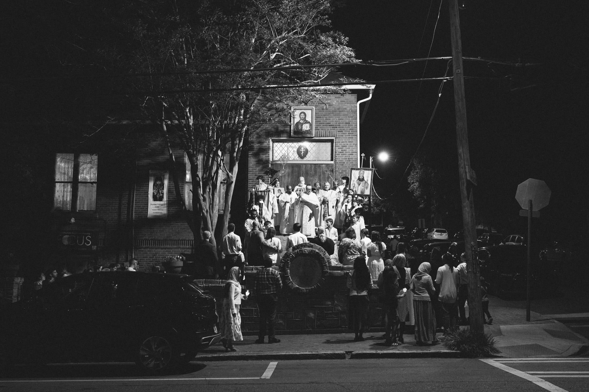

Untitled
Maybe there is a truth to ponder. Is it the signs of mystics, or the awe and wonder of the tongues of fire, or maybe a drop of water, a tear, from the written eye of a fearless martyr. Maybe it's how thin air becomes flame, again, on the night that death was conquered. With a severed ear I listen for the words of the Potter, and with grace-filled hands I remove the grave clothes from my faith in hopes that it is dead no longer.